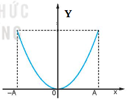
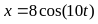

PHẦN I. Câu trắc nghiệm nhiều phương án lựa chọn
Mỗi câu có 4 phương án, chỉ chọn một đáp án đúng (0,25 điểm).
1
 Con lắc lò xo dao động điều hoà với chu kì T. Đồ thị biểu diễn sự biến đổi động năng và thế năng theo thời gian cho ở hình vẽ. Giá trị của T là
Con lắc lò xo dao động điều hoà với chu kì T. Đồ thị biểu diễn sự biến đổi động năng và thế năng theo thời gian cho ở hình vẽ. Giá trị của T là2
Một con lắc lò xo gồm lò xo có độ cứng 100 N/m một đầu cố định, đầu còn lại được gắn với một vật nhỏ m đang dao động điều hòa với biên độ 5 cm. Động năng của con lắc khi vật qua vị trí cân bằng là
3
Một vật dao động điều hòa dọc theo trục tọa độ nằm ngang Ox với chu kì T, vị trí cân bằng và mốc thế năng ở gốc tọa độ. Tính từ lúc vật có li độ dương lớn nhất, thời điểm đầu tiên mà động năng và thế năng của vật bằng nhau là
4
Một vật có khối lượng 1 kg dao động điều hòa xung quanh vị trí cân bằng. Đồ thị dao động của thế năng của vật như hình vẽ. Cơ năng của vật dao động là

5
Cho một vật dao động điều hòa với biên độ A dọc theo trục Ox và quanh gốc tọa độ O. Một đại lượng Y nào đó của vật phụ thuộc vào li độ x của vật theo đồ thị có dạng một phần của đường parabol như hình vẽ bên. Y là đại lượng nào trong số các đại lượng sau?

6
Một con lắc lò xo gồm vật nhỏ có khối lượng $40\ g$ và lò xo nhẹ có độ cứng $16\ N/m$, dao động điều hòa với biên độ $8\ cm$. Khi đi qua vị trí cân bằng, tốc độ của vật là
7
Một con lắc lò xo có độ cứng $900\ N/m$ dao động với biên độ là $10\ cm$. Cơ năng của con lắc trong quá trình dao động có giá trị là
8
Một chất điểm có khối lượng $m$, dao động điều hoà quanh vị trí cân bằng $O$ với tần số góc $\omega$. Lấy gốc thế năng tại $O$. Khi li độ của vật là $x$ thì vận tốc của nó là $v$. Cơ năng $W$ của vật được tính bằng biểu thức
9
Một chất điểm dao động điều hòa, nếu tăng biên độ dao động lên 2 lần thì đại lượng nào dưới đây có giá trị tăng lên 2 lần?
10
Cho một chất điểm dao động điều hòa quanh vị trí cân bằng $O$. Li độ biến thiên theo thời gian như mô tả trong đồ thị sau. Tại thời điểm $t_3$

11
Chọn câu sai: Năng lượng của một vật dao động điều hòa
12
Một vật nhỏ thực hiện dao động điều hòa theo phương trình  (cm) với t tính bằng giây. Động năng của vật đó biến thiên với chu kì bằng
(cm) với t tính bằng giây. Động năng của vật đó biến thiên với chu kì bằng
(cm) với t tính bằng giây. Động năng của vật đó biến thiên với chu kì bằng13
Cho một vật dao động điều hòa với biên độ A dọc theo trục Ox và quanh gốc tọa độ O. Một đại lượng Y nào đó của vật phụ thuộc vào li độ x của vật theo đồ thị có dạng một phần của đường pa-ra-bôn như hình vẽ dưới. Y là đại lượng nào?

14
Một vật nhỏ thực hiện dao động điều hòa với phương trình $x = 10\cos(4\pi t + \pi/2)$ (cm) với t tính bằng giây. Động năng của vật đó biến thiên với chu kì bằng
15
Một vật nhỏ thực hiện dao động điều hòa theo phương trình $x=10\sin(4\pi t+\pi/2)$ (cm) với $t$ tính bằng giây. Động năng của vật đó biến thiên với chu kì bằng
16
Một vật nhỏ khối lượng 100 g dao động theo phương trình

(x tính bằng cm, t tính bằng s). Động năng cực đại của vật bằng17
Một vật có khối lượng 50 g, dao động điều hoà với biên độ 4 cm và tần số góc 3 rad/s. Động năng cực đại của vật là
18
 Cho một vật dao động điều hòa có đồ thị biểu diễn động năng theo li độ như hình vẽ. Cơ năng dao động của vật là
Cho một vật dao động điều hòa có đồ thị biểu diễn động năng theo li độ như hình vẽ. Cơ năng dao động của vật là19
 Một vật có khối lượng 50 g, dao động điều hòa với tần số góc 3 rad/s và có đồ thị li độ theo thời gian như hình vẽ. Cơ năng dao động của vật là
Một vật có khối lượng 50 g, dao động điều hòa với tần số góc 3 rad/s và có đồ thị li độ theo thời gian như hình vẽ. Cơ năng dao động của vật là20
Một con lắc lò xo gồm vật có khối lượng m treo vào một lò xo nhẹ có độ cứng 100 N/m dao động điều hoà với biên độ 10 cm. Cơ năng dao động của vật là